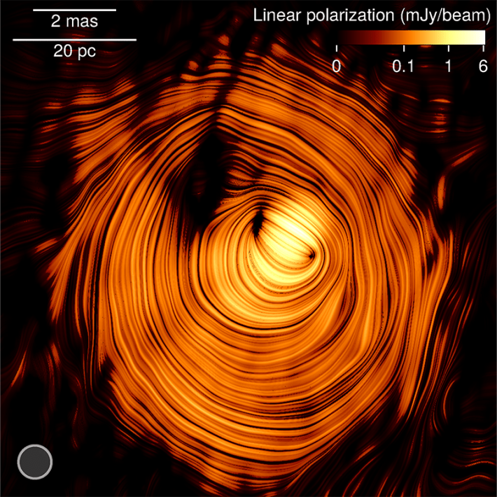

A new astronomical image shows a one-of-a-kind deep space object that seems to peer down at us on Earth like the Eye of Sauron, portrayed as a flaming eye in The Lord of the Rings movies. That object, shown here, is called a blazar, a jet of radiation issuing from a supermassive black hole, and it is shining deep in the heart of an active galaxy 3.5 billion light-years away.
Also known as PKS 1424+240, this blazar happens to be one of the brightest in the sky. It has puzzled astronomers since it was discovered in the 1970s. Though its jet appears to move sluggishly, it also seems to be one of the biggest emitters of gamma rays and high-energy neutrinos, those nearly massless and chargeless ghost particles that abound across the universe. Sluggish and high-energy do not often go together, but the newly released image offers some fresh clues to help solve the mystery.
PKS 1424+240 is a one-of-a-kind blazar
"This is the first time we've ever got such a clear picture from inside the jet," says astrophysicist Yuri Kovalev at the Max Planck Institute for Radio Astronomy in Bonn in Germany. "We see emissions all around the central bright region where the supermassive black hole is.” Kovalev is the author of a new study in the journal Astronomy and Astrophysics that reports that PKS 1424+240 is aligned in such a way that astronomers on Earth can look down the entire length of the jet.
Compiled from data gathered during more than 15 years of precise radio-telescope observations, the image reveals that this particular blazar is pointed almost directly at the Earth, allowing an unprecedented look at what is happening inside. The ringed layers visible in the image represent a donut-shaped magnetic field at the base of the jet, which could be responsible for focusing the jet and accelerating particles like neutrinos. Because the jet is so closely aligned with the Earth, the high-energy neutrino emission may also be amplified by the effects of special relativity, boosting its brightness. At the same time, the jet may only appear to be moving slowly due to so-called projection effects. This particular optical illusion is why when you look at an oncoming train that is approaching head on, it seems to travel slowly, until it is upon you.

THE EYE: It may look eerily similar to the Eye of Sauron from The Lord of the Rings, but this photo is really of a blazar named PKS 1424+240, a jet of radiation issuing from a supermassive black hole. Image via Y.Y. Kovalev et al.
Kovalev and his colleagues have studied this particular blazar since 2009 with a synchronized assembly of 10 radio-telescopes that stretches from Hawaii to the Caribbean. The synchronization of these telescopes means the entire array effectively works like a single radio dish more than 5,000 miles across.
Scientists aren't sure why the supermassive black holes at the centers of some galaxies form blazars, while most others do not. Kovalev says the new study will help researchers better understand the blazar jets and the powerful, twisted magnetic fields at the center of black holes that are thought to create them.
"This is the first time we've ever got such a clear picture from inside the jet.”
Blazars are relatively common—astronomers have now detected more than 3,000 of them. But only about a tenth of those emit high-energy neutrinos, which Kovalev thinks are created when relatively heavy protons are accelerated to nearly the speed of light near the surface of the supermassive black hole. Protons are relatively massive particles—about 1,800 times heavier than an electron, and billions of times heavier than a neutrino—and the fact that neutrinos are created at all is a clue to the process that creates them."High-energy neutrinos are a smoking gun for efficient proton accelerators," he says, and so better understanding how supermassive black holes can accelerate such massive particles is an "exciting and challenging problem."
Boston University's Alan Marscher, a professor emeritus of astronomy who studies blazars but who was also not involved in the study, notes that Kovalev's suggestion that the neutrinos form near the surface of the central black hole is not the only plausible explanation for them. Instead, the neutrinos may have been created by magnetic shockwaves that occur inside a blazar jet as it expands, he says.
"PKS 1424+240 is a one-of-a-kind blazar," says astrophysicist Raffaele D'Abrusco of the Smithsonian Astrophysical Observatory, who was not involved in the study. "This very peculiar blazar happens to have its jet almost perfectly aligned to our line of sight … This specific orientation gives us a chance to directly investigate regions of the jet that are usually not accessible."
City University of Paris astrophysicist Matteo Cerruti, an expert in blazars, adds that simply capturing the "Eye of Sauron" image is itself extraordinary, because the extreme distance between PKS 1424+240 and Earth means a precise alignment is needed to observe it with radio telescopes: "Getting observational proof of such a tiny viewing angle is an outstanding result." 
Lead image: Y.Y. Kovalev et al.